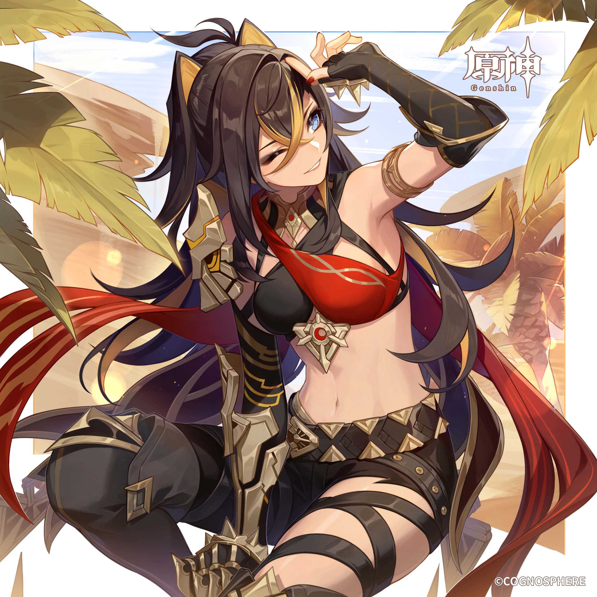

雷電将軍
プロフィールへ
雷元素最強サポーター。メインアタッカーとしても運用できるレベルの火力が出る。原神を始めた理由になった1番好きなキャラ。
申鶴
プロフィールへ
氷元素最強サポーター。あらゆる氷元素キャラを強化できる優秀な元素爆発と元素スキル。CV担当は川澄綾子さん、最高です。
八重神子
プロフィールへ
超優秀サブアタッカー。草元素と組み合わせる場合全キャラ中最強クラス。設置型のスキルが優秀で探索などにも役立ち戦闘が楽。
ディシア

プロフィールへ
ダメージの肩代わりと中断耐性付与ができる希少性。フォンテーヌで評価上昇中。性能としてはもう一声欲しいので今後に期待。
楓原万葉
プロフィールへ
風元素最強サポーター。とりあえず万葉を編成すれば火力がグンと上がる。参照ステータスに関わらず強化できるため誰とでも組み合わせることができる万能キャラ。
ヌヴィレット
プロフィールへ
現環境最強アタッカー。原神を破壊した最高審判官。明らかにおかしい。単体で完結しておりパーティ単位では伸びしろがある。